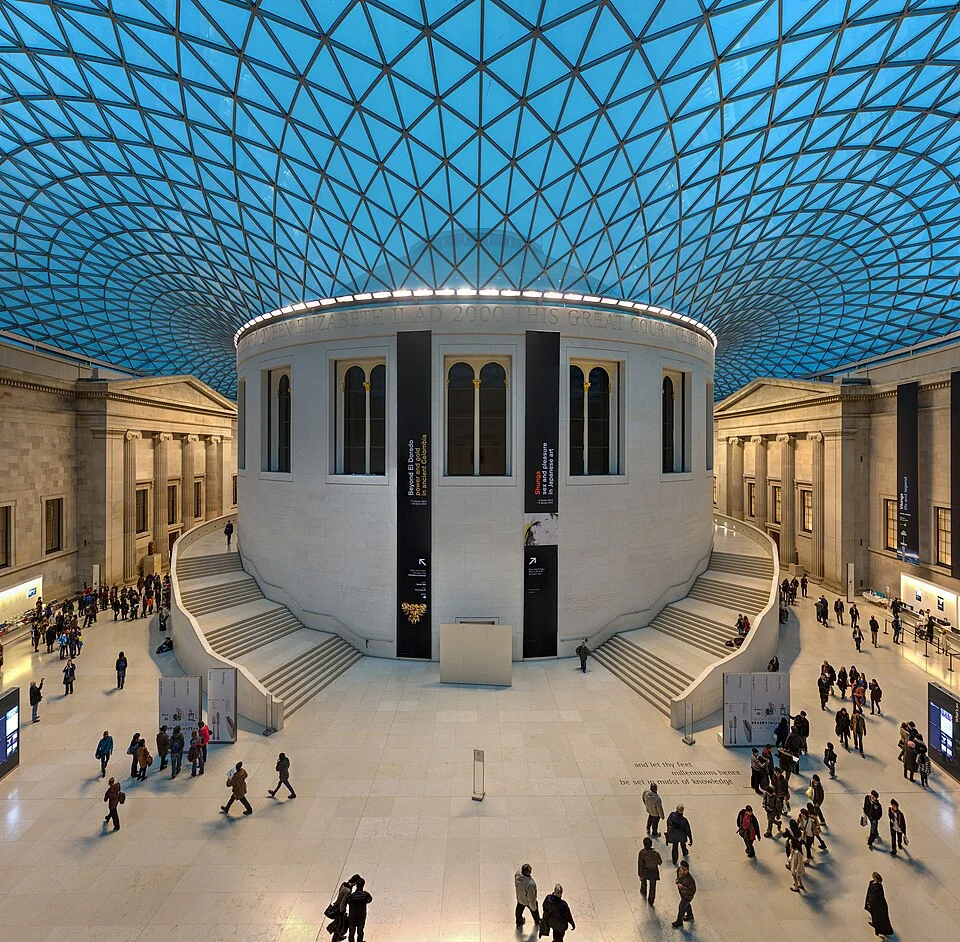
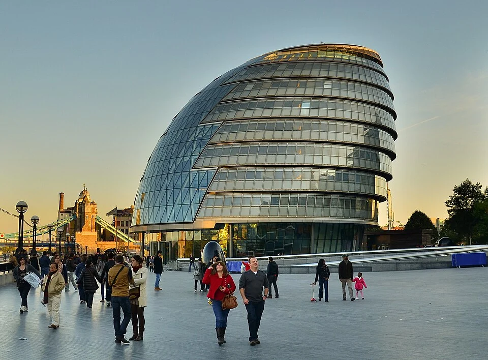
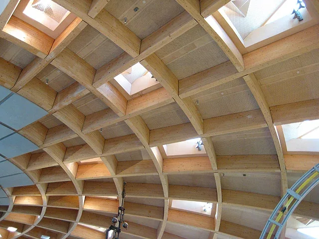
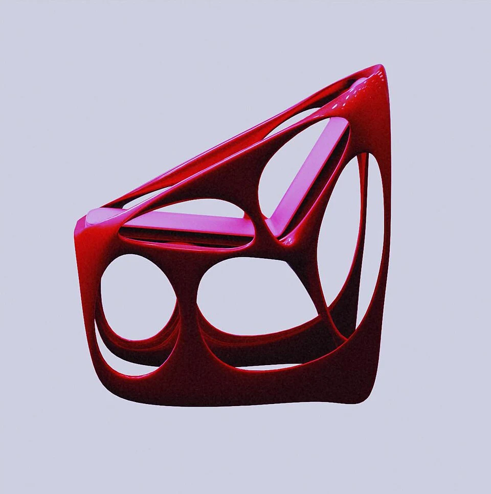

選定理由・よく研究されている
丸い閲覧室の外壁と四角い中庭の間を、三角形の網がつないでいます。網目を端まで目でたどると、場所ごとにガラスの形が違います。
作品・制作の例7件を紹介しています。実作品画像4点、参照・関連画像0点。画像の収集は継続中です。
技法・制作方法
Parametric design
窓の幅を変えると、隣の柱の位置も変わる。そんな関係を先に決めて設計する方法です。パラメーターは、幅や角度など、変えられる数値や条件のことです。
実作品を見る

画像を表示できませんでした。下の出典ページで確認できます。
フォスター・アンド・パートナーズほか／幾何設計の研究はクリス・ウィリアムズ / 2000年
丸い閲覧室の外壁と四角い中庭の間を、三角形の網がつないでいます。網目を端まで目でたどると、場所ごとにガラスの形が違います。
Diliff／Wikimedia Commons（元画像を縮小・WebP変換）
出典で作品・資料を見る ↗実作品を見る

画像を表示できませんでした。下の出典ページで確認できます。
フォスター・アンド・パートナーズ / 2002年
ガラスを巻いた各階が少しずつ位置をずらし、片側にせり出しています。日射を受ける向きと外壁の形の関係を計算した旧市庁舎です。
Garry Knight／Wikimedia Commons（元画像を縮小・WebP変換）
出典で作品・資料を見る ↗実作品を見る

画像を表示できませんでした。下の出典ページで確認できます。
グリムショー／ジョリオン・ブリューイス、ピーター・ランダル＝ペイジら / 2005年
ヒマワリの種の並びを思わせるらせんが、天井の木の梁に見えます。植物の育ち方から読み取った数の規則を、屋根を支える骨組みに移した建物です。
Pauline Eccles／Wikimedia Commons（元画像を縮小・WebP変換）
出典で作品・資料を見る ↗実作品を見る

画像を表示できませんでした。下の出典ページで確認できます。
エマニュエル・トゥレーヌ／Ventury / 2010年代の公開図版
座面の下で太い枠が枝分かれし、背までひと続きにつながっています。設計者はガウディと自然の造形から着想を得たと説明しています。掲載図は赤く表示したデザイン図です。
Emmanuel Touraine／Wikimedia Commons（元画像を縮小・WebP変換）
出典で作品・資料を見る ↗実在する作品・制作物（個別の分野は domain を参照）
薄い合板が曲がる性質を設計に組み込みました。
作品・資料の出典を見る ↗原題：ICD/ITKE Research Pavilion 2010
シュトゥットガルト大学 アイシーディー・アイティーケー（建築の計算・構造を研究する部門）と学生チーム / 2010 / 研究用仮設建築
日本語の見出しは読みやすさのための呼び名・説明名です。原題は記録欄に示しています。
画像の転載条件は未確認。出典の公開は転載許諾ではありません。
実在する作品・制作物（個別の分野は domain を参照）
ウニの殻を手がかりに、形・構造計算・加工をつなぎました。
作品・資料の出典を見る ↗原題：ICD/ITKE Research Pavilion 2011
シュトゥットガルト大学 アイシーディー・アイティーケー（建築の計算・構造を研究する部門）と学生チーム / 2011 / 研究用仮設建築
日本語の見出しは読みやすさのための呼び名・説明名です。原題は記録欄に示しています。
画像の転載条件は未確認。出典の公開は転載許諾ではありません。
実在する作品・制作物（個別の分野は domain を参照）
構造設計者は、形と構造を異なる条件で調べたと説明しています。
作品・資料の出典を見る ↗原題：Heydar Aliyev Centre
ザハ・ハディド・アーキテクツ／構造設計：エーケーティー / 2012年完成（構造設計者の記録） / 建築
日本語の見出しは読みやすさのための呼び名・説明名です。原題は記録欄に示しています。
画像の転載条件は未確認。出典の公開は転載許諾ではありません。
建築の写真
丸い閲覧室の外壁と四角い中庭の間を、三角形の網がつないでいます。網目を端まで目でたどると、場所ごとにガラスの形が違います。
作品・資料の出典を見る ↗原題：Queen Elizabeth II Great Court
フォスター・アンド・パートナーズほか／幾何設計の研究はクリス・ウィリアムズ / 2000年 / 建築の写真
建築の写真
ガラスを巻いた各階が少しずつ位置をずらし、片側にせり出しています。日射を受ける向きと外壁の形の関係を計算した旧市庁舎です。
作品・資料の出典を見る ↗原題：City Hall, Southwark
フォスター・アンド・パートナーズ / 2002年 / 建築の写真
建築の写真
ヒマワリの種の並びを思わせるらせんが、天井の木の梁に見えます。植物の育ち方から読み取った数の規則を、屋根を支える骨組みに移した建物です。
作品・資料の出典を見る ↗原題：The Core at the Eden Project
グリムショー／ジョリオン・ブリューイス、ピーター・ランダル＝ペイジら / 2005年 / 建築の写真
家具の図版
座面の下で太い枠が枝分かれし、背までひと続きにつながっています。設計者はガウディと自然の造形から着想を得たと説明しています。掲載図は赤く表示したデザイン図です。
作品・資料の出典を見る ↗原題：Gaudi Lounge Chair
エマニュエル・トゥレーヌ／Ventury / 2010年代の公開図版 / 家具の図版
曲がった建物だけの方法ではありません。材料が曲がる力や、部品の間隔を関係づけることにも使えます。見た目が複雑だから使われた、と断定せず、制作記録を確かめます。
色は設計条件を見分ける補助にも使われます。特定の配色の名称ではありません。
図面や画面では、数値が何を表すかを読む必要があります。
一つの数値を変えたとき、どの形が一緒に変わるかを見ます。
部品単独ではなく、部品どうしの関係を設計します。
パラメトリシズムという建築上の主張と、パラメーターを使う設計方法は同じではありません。
試作や強度の確認は省けません。画面上でつながることと、実物が安全に立つことは別です。
建築の三例です。曲面を技法の証拠とせず、大学と構造設計者の制作記録を根拠にしています。
作品・制作の例7件を紹介しています。実作品画像4点、参照・関連画像0点。画像の収集は継続中です。